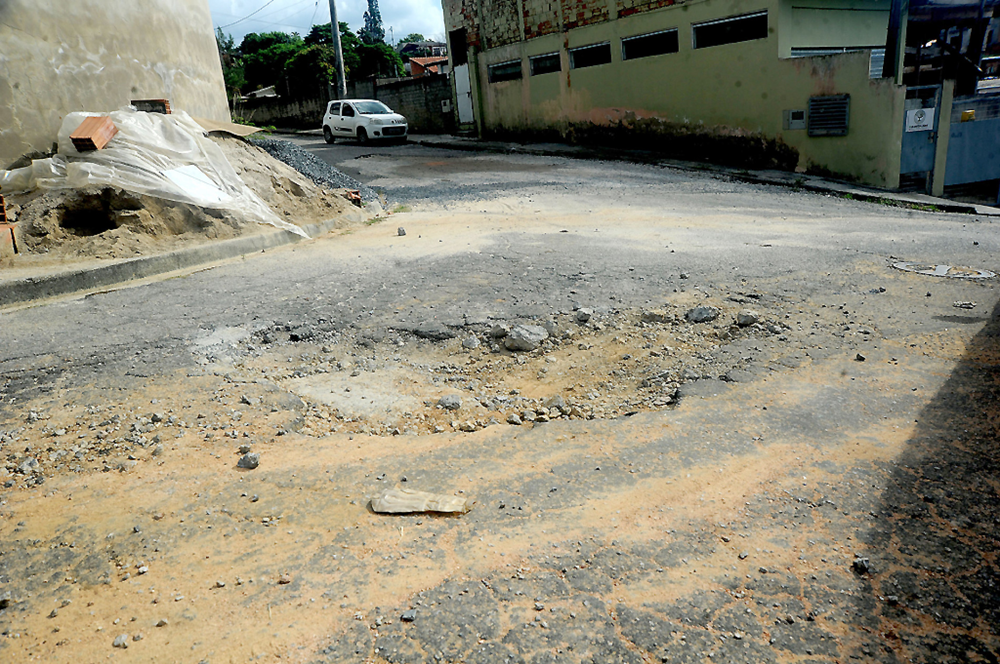
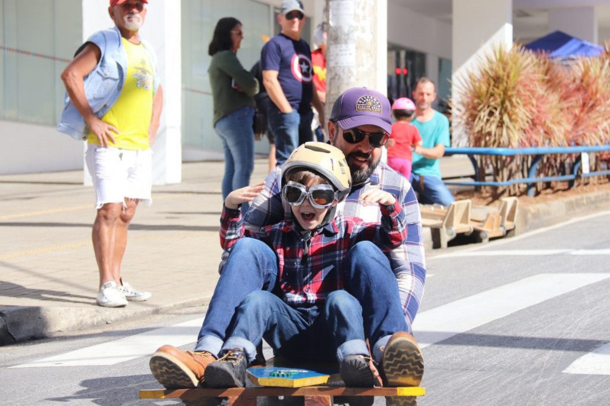
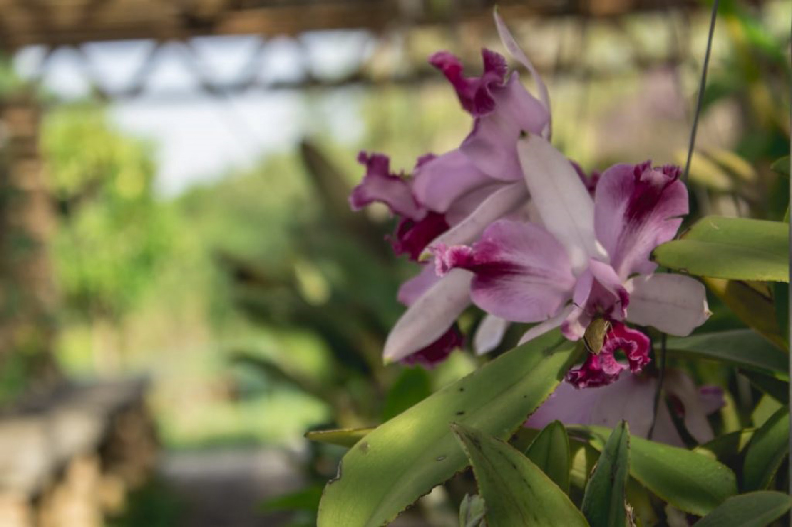
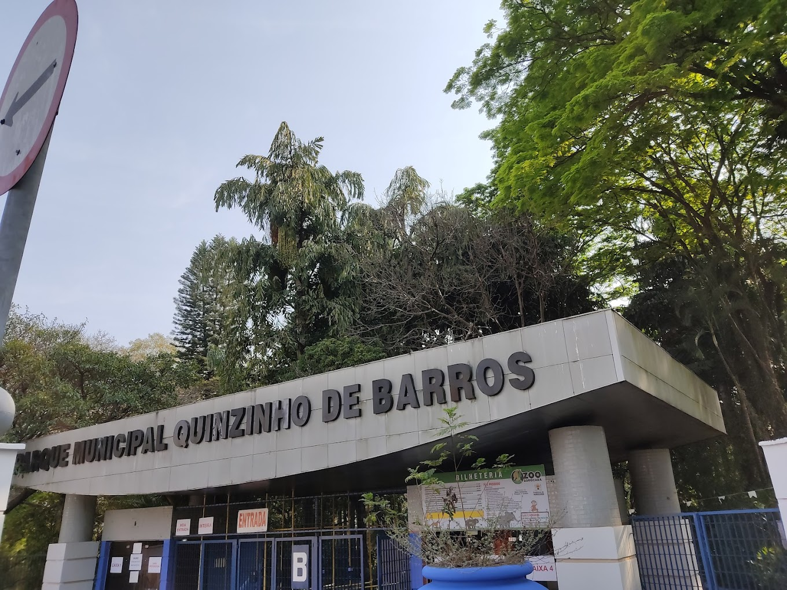
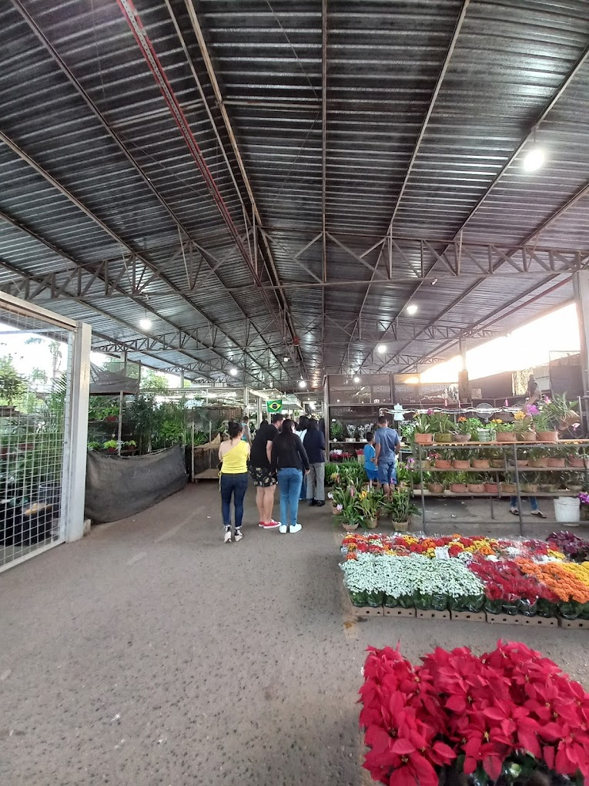
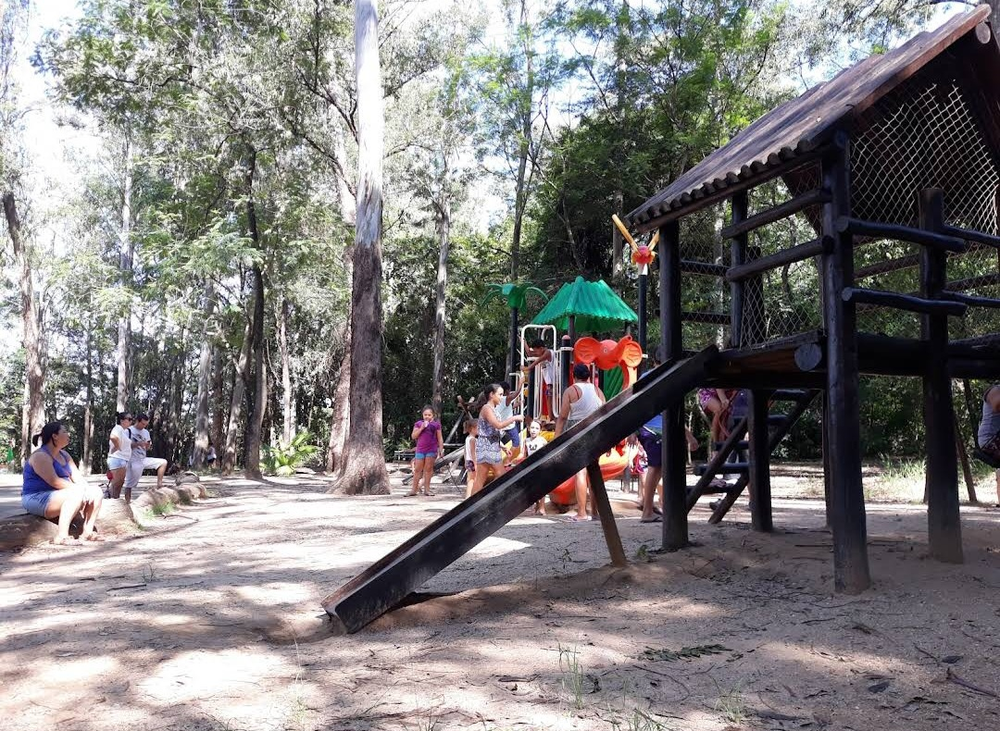
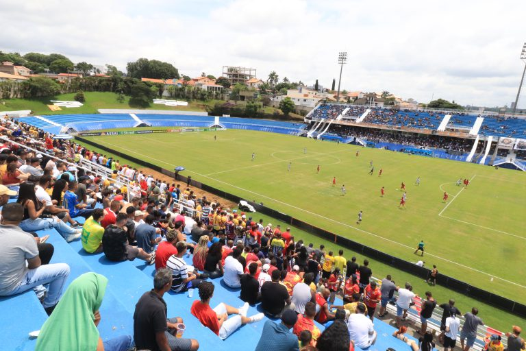
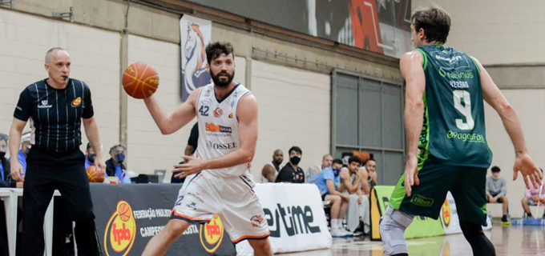
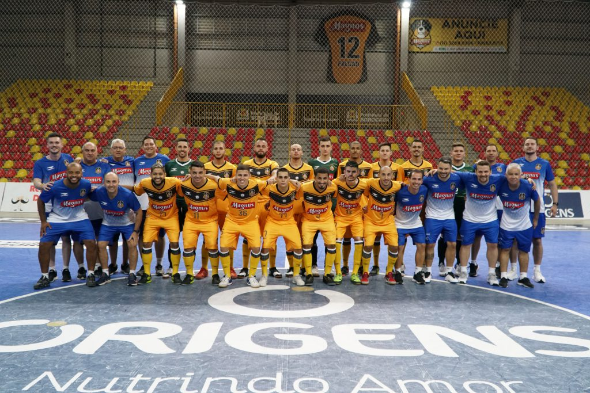

Notícias  Moradores da Vila Astúrias reclamam de buracos nas vias E esse não é o único ponto do bairro nessa situação. A reportagem do Cruzeiro do Sul visitou outros trechos da região e encontrou diversos buracos. Alguns são pequenos, já outros tomam conta de grande parte das vias. Na rua Manoel de Abreu, por exemplo, tem áreas com o problema. Entre as ruas Luiz Munhoz Puga e Sorocaba há um grande buraco no cruzamento. Para passar com um veículo, é necessário parar e desviar com cuidado. “Na rua de baixo tem buraco e na principal também. Eu quero que eles (prefeitura) arrumem o mais rápido possível”, declarou José Carlos Ferraz. Fonte: Jornal Cruzeiro do Sul  Passeio de Rolimã é atração no Centro Domingo (24), das 13h às 17h, acontece mais uma edição do Passeio de Rolimã, na rua São Bento, a partir do Mosteiro São Bento, até as proximidades da praça Coronel Fernando Prestes, no Centro. A atividade é gratuita e aberta a todos, sem necessidade de inscrição. Realizado pela Secretaria da Cultura (Secult), com apoio do Porão 144, o objetivo do evento é reunir as famílias e promover o resgate dessa antiga brincadeira de rua, que marcou muitas gerações, em uma tarde de lazer e muita diversão entre pais, filhos e amigos. Outras informações podem ser obtidas, de segunda a sexta-feira, das 8h às 17h, pelo e-mail: secult@sorocaba.sp.gov.br.  Sorocaba realiza curso gratuito sobre orquídeas Amanhã (20), das 8h30 às 10h30, pessoas com idade a partir de 18 anos poderão participar do Clube de Jardinagem, no Jardim Botânico Irmãos Villas-Bôas, localizado no Jardim Dois Corações. A programação será voltada ao cultivo de orquídeas. Realizada pela Secretaria do Meio Ambiente, Proteção e Bem-Estar Animal (Sema), a iniciativa gratuita tem como intuito atender a crescente demanda da comunidade que frequenta o Jardim Botânico e que está interessada em aprender e praticar a jardinagem. Os participantes terão a atividade prática, auxiliando na manutenção do orquidário do Jardim Botânico de Sorocaba. A participação é aberta ao público, sem necessidade de inscrição prévia. O Jardim Botânico está localizado na rua Miguel Montoro Lozano, 340, no Jardim Dois Corações. Outras informações podem ser obtidas, de segunda a sexta-feira, das 9h às 17h, pelo e-mail jardimbotanico@sorocaba.sp.gov.br.
Locais  Chimpanzé Paulinho, do Zoológico de Sorocaba, morre aos 40 anos O chimpanzé Paulinho, conhecido pela personalidade carismática e por socializar com os visitantes do zoológico Quinzinho de Barros, em Sorocaba (SP), morreu na última segunda-feira (5), aos 40 anos. De acordo com o zoológico, o animal passou por uma série de exames e após retornar ao recinto, sofreu uma parada cardiorrespiratória. Em nota, a Prefeitura de Sorocaba afirma que o animal foi submetido a um exame necroscópico para obter mais detalhes sobre a causa da morte. O resultado ainda não foi divulgado.  Entreposto da CEAGESP em Sorocaba realiza reforma do poço artesiano Na última segunda-feira (15/01) o Entreposto de Sorocaba (CESOR) realizou a troca de encanamentos e a limpeza do poço artesiano que abastece a unidade, em um total de 240 metros de tubulações. A água é captada diretamente do Aquífero Tubarão, grande aquífero sedimentar de extensão regional. Além disso, foi realizada lavagem completa da caixa d´água inferior do sistema, que foi submetida a processos de desinfecção e cloração. Esse reservatório tem capacidade para quase 1 milhão de litros de água.  Após manutenção, parque Chico Mendes é reaberto O primeiro fim de semana após a reabertura do Parque Natural “Chico Mendes” atraiu diversos visitantes. Alguns fizeram piqueniques, outros levaram as crianças para brincar e há quem decidiu ir até o local para, simplesmente, contemplar a natureza. No entanto, mesmo após algumas mudanças, os frequentadores pedem mais melhorias à Prefeitura. O parque Chico Mendes, que fica na avenida Três de Março, no Alto da Boa Vista, fechou em 15 de setembro. Segundo a administração pública, os trabalhos de manutenção tiveram início com a obra de limpeza e desassoreamento do lago para a retirada de resíduos e sedimentos que ficaram depositados no fundo do corpo d’água. O objetivo do serviço de zeladoria é aumentar a vazão e a oxigenação da água. No total, foram retirados cerca de 60 m³ de sedimentos, o que equivale a dez caminhões cheios, utilizando uma escavadeira hidráulica.
Esportes  Série A2 do Paulista: FPF detalha jogos das quartas de final; veja tabela São Bento x Noroeste 23 de março, sábado, às 15h: Noroeste x São Bento - Alfredo de Castilho 27 de março, quarta, às 19h30: São Bento x Noroeste - Walter Ribeiro São José-SP x Velo Clube 23 de março, sábado, às 19h15: Velo Clube x São José - Benitão 27 de março, quarta, às 20h: São José x Velo Clube - Martins Pereira Ferroviária x Juventus-SP 24 de março, domingo, às 11h: Juventus x Ferroviária - Rua Javari 27 de março, quarta, às 19h: Ferroviária x Juventus - Fonte Luminosa XV de Piracicaba x Portuguesa Santista 24 de março, domingo, às 11h10: Portuguesa Santista x XV de Piracicaba - Ulrico Mursa 27 de março, quarta, às 20h: XV de Piracicaba x Portuguesa Santista - Barão de Serra Negra  Liga Sorocabana de Basquete estreia com vitória na Copa São Paulo Adulta Masculina 2024 A Liga Sorocabana de Basquete (LSB/PM Sorocaba) estreou com vitória, nesta terça-feira (12), na Copa São Paulo Adulta Masculina 2024, contra o Jandira Basquete, pelo placar 95 a 25, no Ginásio Municipal de Esportes “Gualberto Moreira”, localizado na Vila Hortência. A equipe sorocabana a é a atual campeã. Promovido pela Federação Paulista de Basketball (FPB), o torneio reúne sete times: LSB, Associação Atlética São Caetano, Basquete Diadema, Basquete Pinda, Grupo BT/Clube de Campo de Tatuí, Avaré Basquete e Jandira Basquete. Nesta fase inicial da Copa São Paulo Adulta Masculina, os times jogam entre si, em turno e returno. O elenco da LSB/PM Sorocaba, sob o comando do técnico Rinaldo Rodrigues, é formado pelos seguintes jogadores: Adler Ribeiro, Malik Hunt, Anthony Harris, Beto Fagundes, João Fued, Dilber Ribeiro, Leandro Moraes, Weverton Felipe, Thiago Henrique, Victor Egon, Lucas “Fumaça” Marciel e Elivelton dos Santos. A LSB representa o Município em campeonatos oficiais, com a parceria da Prefeitura de Sorocaba, por meio da Secretaria de Esporte e Qualidade de Vida (Sequav). Mais informações podem ser obtidas nas redes sociais do time: @lsboficial/.  Magnus Futsal Sorocaba é campeão da Supercopa O Magnus Futsal Sorocaba venceu o Praia Clube (MG), no domingo (10), na Arena Jaraguá, em Jaraguá do Sul (SC), pelo placar de 5 a 1, conquistando o título da Supercopa Masculina de Futsal 2024, com gols de Charuto (2), Pepita, Leandro Lino e Gabriel. Com isso, a equipe sorocabana garantiu a vaga na Libertadores de Futsal, torneio mais importante do continente, que ocorrerá de 19 a 26 de maio, na Argentina. Essa é a terceira vez que o time de Sorocaba é campeão da Supercopa, organizada pela Confederação Brasileira de Futsal (CBFS). O Magnus Futsal Sorocaba já venceu a competição em 2018 e 2021. O Magnus Futsal agora volta suas atenções para a estreia na Liga Nacional de Futsal 2024, que tem data prevista para o dia 23 de março, contra o São Lourenço, fora de casa. Comandado pelo técnico Ricardo Di Izzepe, a equipe sorocabana conta com o apoio da Prefeitura de Sorocaba, por meio da Secretaria de Esporte e Qualidade de Vida (Sequav). Mais informações podem ser obtidas nas redes sociais do time: https://www.facebook.com/magnusfutsal e @magnusfutsal.
Notícias Moradores da Vila Astúrias reclamam de buracos nas vias E esse não é o único ponto do bairro nessa situação. A reportagem do Cruzeiro do Sul visitou outros trechos da região e encontrou diversos buracos. Alguns são pequenos, já outros tomam conta de grande parte das vias. Na rua Manoel de Abreu, por exemplo, tem áreas com o problema. Entre as ruas Luiz Munhoz Puga e Sorocaba há um grande buraco no cruzamento. Para passar com um veículo, é necessário parar e desviar com cuidado. “Na rua de baixo tem buraco e na principal também. Eu quero que eles (prefeitura) arrumem o mais rápido possível”, declarou José Carlos Ferraz. Fonte: Jornal Cruzeiro do Sul Passeio de Rolimã é atração no Centro Domingo (24), das 13h às 17h, acontece mais uma edição do Passeio de Rolimã, na rua São Bento, a partir do Mosteiro São Bento, até as proximidades da praça Coronel Fernando Prestes, no Centro. A atividade é gratuita e aberta a todos, sem necessidade de inscrição. Realizado pela Secretaria da Cultura (Secult), com apoio do Porão 144, o objetivo do evento é reunir as famílias e promover o resgate dessa antiga brincadeira de rua, que marcou muitas gerações, em uma tarde de lazer e muita diversão entre pais, filhos e amigos. Outras informações podem ser obtidas, de segunda a sexta-feira, das 8h às 17h, pelo e-mail: secult@sorocaba.sp.gov.br. Sorocaba realiza curso gratuito sobre orquídeas Amanhã (20), das 8h30 às 10h30, pessoas com idade a partir de 18 anos poderão participar do Clube de Jardinagem, no Jardim Botânico Irmãos Villas-Bôas, localizado no Jardim Dois Corações. A programação será voltada ao cultivo de orquídeas. Realizada pela Secretaria do Meio Ambiente, Proteção e Bem-Estar Animal (Sema), a iniciativa gratuita tem como intuito atender a crescente demanda da comunidade que frequenta o Jardim Botânico e que está interessada em aprender e praticar a jardinagem. Os participantes terão a atividade prática, auxiliando na manutenção do orquidário do Jardim Botânico de Sorocaba. A participação é aberta ao público, sem necessidade de inscrição prévia. O Jardim Botânico está localizado na rua Miguel Montoro Lozano, 340, no Jardim Dois Corações. Outras informações podem ser obtidas, de segunda a sexta-feira, das 9h às 17h, pelo e-mail jardimbotanico@sorocaba.sp.gov.br.
Locais Chimpanzé Paulinho, do Zoológico de Sorocaba, morre aos 40 anos O chimpanzé Paulinho, conhecido pela personalidade carismática e por socializar com os visitantes do zoológico Quinzinho de Barros, em Sorocaba (SP), morreu na última segunda-feira (5), aos 40 anos. De acordo com o zoológico, o animal passou por uma série de exames e após retornar ao recinto, sofreu uma parada cardiorrespiratória. Em nota, a Prefeitura de Sorocaba afirma que o animal foi submetido a um exame necroscópico para obter mais detalhes sobre a causa da morte. O resultado ainda não foi divulgado. Entreposto da CEAGESP em Sorocaba realiza reforma do poço artesiano Na última segunda-feira (15/01) o Entreposto de Sorocaba (CESOR) realizou a troca de encanamentos e a limpeza do poço artesiano que abastece a unidade, em um total de 240 metros de tubulações. A água é captada diretamente do Aquífero Tubarão, grande aquífero sedimentar de extensão regional. Além disso, foi realizada lavagem completa da caixa d´água inferior do sistema, que foi submetida a processos de desinfecção e cloração. Esse reservatório tem capacidade para quase 1 milhão de litros de água. Após manutenção, parque Chico Mendes é reaberto O primeiro fim de semana após a reabertura do Parque Natural “Chico Mendes” atraiu diversos visitantes. Alguns fizeram piqueniques, outros levaram as crianças para brincar e há quem decidiu ir até o local para, simplesmente, contemplar a natureza. No entanto, mesmo após algumas mudanças, os frequentadores pedem mais melhorias à Prefeitura. O parque Chico Mendes, que fica na avenida Três de Março, no Alto da Boa Vista, fechou em 15 de setembro. Segundo a administração pública, os trabalhos de manutenção tiveram início com a obra de limpeza e desassoreamento do lago para a retirada de resíduos e sedimentos que ficaram depositados no fundo do corpo d’água. O objetivo do serviço de zeladoria é aumentar a vazão e a oxigenação da água. No total, foram retirados cerca de 60 m³ de sedimentos, o que equivale a dez caminhões cheios, utilizando uma escavadeira hidráulica.
Esportes Série A2 do Paulista: FPF detalha jogos das quartas de final; veja tabela São Bento x Noroeste 23 de março, sábado, às 15h: Noroeste x São Bento - Alfredo de Castilho 27 de março, quarta, às 19h30: São Bento x Noroeste - Walter Ribeiro São José-SP x Velo Clube 23 de março, sábado, às 19h15: Velo Clube x São José - Benitão 27 de março, quarta, às 20h: São José x Velo Clube - Martins Pereira Ferroviária x Juventus-SP 24 de março, domingo, às 11h: Juventus x Ferroviária - Rua Javari 27 de março, quarta, às 19h: Ferroviária x Juventus - Fonte Luminosa XV de Piracicaba x Portuguesa Santista 24 de março, domingo, às 11h10: Portuguesa Santista x XV de Piracicaba - Ulrico Mursa 27 de março, quarta, às 20h: XV de Piracicaba x Portuguesa Santista - Barão de Serra Negra Liga Sorocabana de Basquete estreia com vitória na Copa São Paulo Adulta Masculina 2024 A Liga Sorocabana de Basquete (LSB/PM Sorocaba) estreou com vitória, nesta terça-feira (12), na Copa São Paulo Adulta Masculina 2024, contra o Jandira Basquete, pelo placar 95 a 25, no Ginásio Municipal de Esportes “Gualberto Moreira”, localizado na Vila Hortência. A equipe sorocabana a é a atual campeã. Promovido pela Federação Paulista de Basketball (FPB), o torneio reúne sete times: LSB, Associação Atlética São Caetano, Basquete Diadema, Basquete Pinda, Grupo BT/Clube de Campo de Tatuí, Avaré Basquete e Jandira Basquete. Nesta fase inicial da Copa São Paulo Adulta Masculina, os times jogam entre si, em turno e returno. O elenco da LSB/PM Sorocaba, sob o comando do técnico Rinaldo Rodrigues, é formado pelos seguintes jogadores: Adler Ribeiro, Malik Hunt, Anthony Harris, Beto Fagundes, João Fued, Dilber Ribeiro, Leandro Moraes, Weverton Felipe, Thiago Henrique, Victor Egon, Lucas “Fumaça” Marciel e Elivelton dos Santos. A LSB representa o Município em campeonatos oficiais, com a parceria da Prefeitura de Sorocaba, por meio da Secretaria de Esporte e Qualidade de Vida (Sequav). Mais informações podem ser obtidas nas redes sociais do time: @lsboficial/. Magnus Futsal Sorocaba é campeão da Supercopa O Magnus Futsal Sorocaba venceu o Praia Clube (MG), no domingo (10), na Arena Jaraguá, em Jaraguá do Sul (SC), pelo placar de 5 a 1, conquistando o título da Supercopa Masculina de Futsal 2024, com gols de Charuto (2), Pepita, Leandro Lino e Gabriel. Com isso, a equipe sorocabana garantiu a vaga na Libertadores de Futsal, torneio mais importante do continente, que ocorrerá de 19 a 26 de maio, na Argentina. Essa é a terceira vez que o time de Sorocaba é campeão da Supercopa, organizada pela Confederação Brasileira de Futsal (CBFS). O Magnus Futsal Sorocaba já venceu a competição em 2018 e 2021. O Magnus Futsal agora volta suas atenções para a estreia na Liga Nacional de Futsal 2024, que tem data prevista para o dia 23 de março, contra o São Lourenço, fora de casa. Comandado pelo técnico Ricardo Di Izzepe, a equipe sorocabana conta com o apoio da Prefeitura de Sorocaba, por meio da Secretaria de Esporte e Qualidade de Vida (Sequav). Mais informações podem ser obtidas nas redes sociais do time: https://www.facebook.com/magnusfutsal e @magnusfutsal.